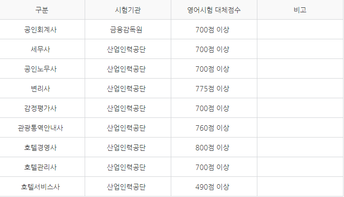

TOEIC 시험정보
- 위의 사진은 토익의 시험정보이며 연령 학력 성별의 제한없이 아무나 응시가 가능하다.
토익에 대한 활용정보
- 위의 사진은 공무원 시험과 영어시험 대체점수이다.

- 위의 사진은 국가자격증과 영어시험 대체점수이다
토익에 대한 기타사항
- 토익 점수는 취업시 스펙으로도 매우매우 많이 쓰인다. 각종 기업, 공공기관 등을 합치면 4,000개 이상의 장소에서 반영한다. 공무원 인사고과를 합치면 6,000개가 넘어갈 수도 있다.
- 기업체에서도 토익 점수를 참고해 채용하지만 실제 영어능력과 큰 상관관계가 없다는 것을 이미 알고 있다. 기업 인사담당자들에 따르면 토익점수는 취업희망자의 영어실력이 아니라 '성실도'의 측정도구로 사용한다고 한다.
- 진짜로 영어를 잘 해야 하는 기업체에서는 토익 점수만으로 선발하지 않고 TOEIC Speaking이나 OPIC 등의 영어 말하기 시험 점수를 평가하며, 영어면접을 별도로 실시하기도 한다.